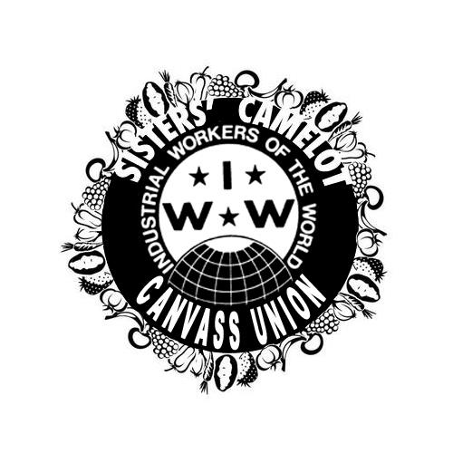

Submitted on Wed, 10/02/2013 - 6:27pm
Headlines:
- IWW Returns To The Railroad With ULP Strike
- Work People's COllege: Building Life-Long Wobblies
- Sakuma Brothers Agricultural Strike In Washington
Features:
- The Parallels Between The Sisters’ Camelot & Jimmy John’s Anti-Union Campaigns
- Workers’ Power: Job Conditioning
- Jane LaTour: Empowerment For Union Women
Download a Free PDF Copy of this issue.
Submitted on Mon, 09/16/2013 - 5:13pm
*Click here to donate to the strike fund*
By Jake Carman, October 2013 Industrial Worker
At midnight on Sunday, Aug. 18, the night shift at the Harvard Square Insomnia Cookies voted unanimously to launch a strike for higher wages, healthcare and freedom to build a union. On Tuesday, Aug. 20, all four strikers joined the Industrial Workers of the World and initiated a public campaign to achieve their goals.
Submitted on Mon, 09/09/2013 - 2:35pm
We are still on strike and back-pay is still being withheld.
On September 1, people who want to undermine our union created a fake indymedia facebook page and used it to publicly publish a phony press release meant to look like it was written by us. This press release falsely claimed that we had called an end to our strike.
This fake press release is clearly meant to confuse people into unknowingly working against the rights of the striking workers by fundraising for or giving money to Sisters' Camelot while the fundraisers are still on strike. This statement is meant to help clarify this confusion created by such dishonesty.
We are still on strike. We are the fundraisers from Sisters' Camelot. Fundraising activity done for Sisters' Camelot is therefore scabbing.
Submitted on Fri, 08/23/2013 - 11:23am

From the Boston IWW
On August 22 at Harvard Square, Wobblies, students, radicals, community members, and workers from Insomnia Cookies hit the picket line hard. Roughly about 40 people came out to show solidarity with workers who are struggling for better pay, better working conditions, and respect.
Many passersby showed solidarity with the striking workers by offering kind words. Some even joined the picket line. When curious people found out about the disgustingly low wages, and the disrespect workers receive, they where appalled. We turned away many a customer at a time when the shop gets increased business from tourists and college students. Fast food employees across the nation are starting to resist their oppressive work situations. The staff at Insomnia Cookies has joined this common front that been developing against very exploitative corporate food chains. Wobblies are helping fast food workers to organize. We call on all workers to show solidarity with this struggle.
An Injury to One is an Injury to All !!!
Submitted on Thu, 08/15/2013 - 12:32pm
From the Chicago IWW
Thursday August 15th 2013: Mobile Rail Workers Union win the NLRB Election 17 -5! The Margin is so wide that the 3 contested ballots were not needed! Now the employer has 7 days to challenge the results. After the 7 days IWW Chicago General Membership Branch becomes the certified bargaining Unit for Mobile Rail Solution’s Employees!